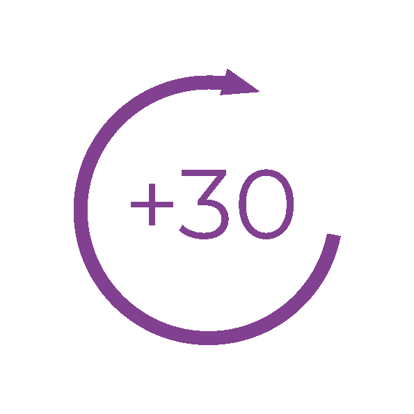
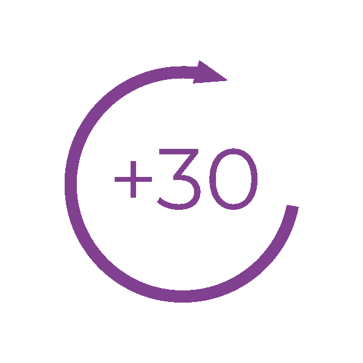

Una casa abandonada en los Pirineos guarda piezas olvidadas de grandes artistas
de nuestro tiempo, junto a testimonios grabados por la artista Marina Abramović.
Un periodista de investigación nos revela la naturaleza y los hechos que rodearon lo
que hubiera sido la mayor performance de la artista. ¿Qué pasó en aquella casa? ¿Por
qué acabó así? Por cierto... ¿Recuerdas Gran Hermano?

Sin conocer el lugar exacto, sabemos que la vivienda se encuentra en algún lugar cercano a los Pirineos. Más escondido de lo que creemos.

Entre las pruebas recogidas se encontró una caja llena de fotografías documentando parte de la estancia de los artistas: pintando, creando, y sobre todo, encuentros entre ellos.

Piezas sonoras... Éste podcast no sería nada sin la famosa grabadora de Marina Abramovic. Aunque no es lo único que se pudo rescatar.

Una de las muchas habitaciones de la gran casa. Probablemente una zona común, un espacio de convivencia. No hay tantos materiales y piezas artísticas como en las habitaciones contiguas, pero hay restos de objetos rotos y cierto abandono… además de trozos de techo. ¿Qué sucedió aquí?

Julia A. Carrasco Álvarez
Irene Lora Romero
María Melgar Becerra

Manuela Gabela Moreno
Lydia Sanchez Gutiérrez
Siguenos en:


Proyecto dirigido por estudiantes de Bellas Artes (Análisis de Proyectos Artísiticos, grupo B),
con la colaboración de estudiantes de Ciencias de la Comunicación (Formatos radiofónicos), con el apoyo y colaboración:

Sitio web creado por el equipo de desarrollo web de EKC23


.png)

.png)
.png)


 
